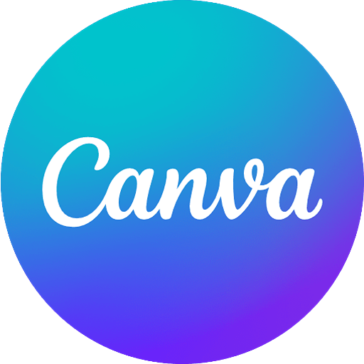

I am a keen learner and always look forward to various opportunity to upscale my self. In this series of learning I have learned many daily and curriculam skill.The technicals skill that help me in my schools is the knowledge of canva.Recently i have learned skill of web page development(HTML,CSS,JAVA-SCRIPT).I like video recording and editing and i have learned skill of editing and I am at intermediate level of it.
